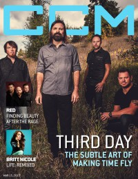
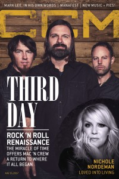

Third Day
 |
| November 2010 CCM Digital |
 |
| 15 March 2015 CCM Digital |
 |
| 15 August 2017 CCM Digital |
Media coverage:
- Dec 1995 in CCM "Faces to Watch: Third Day", by Karly Randolph-Pitman
- Mar 1996 in 7ball "Third Day"
- May 1996 in Campus Life "Tell Me About It: Driver Eight, Common Children, Grammatrain, Third Day, Rob Walker"
- Sum 1996 in HM "Third Day", by Brent Hershey
- Sum 1996 in HM "Concert Review: Third Day, Rocketboy", by Clayton King
- Aug 1996 in CCM "In Concert: David Lipscomb University, Nashville, TN", by Michael Ciani
- Sep 1997 in 7ball "Taylor-Made Growth", by Chris Well
- Sep 1997 in CCM "Conspiracy Theories", by John M De Marco
- Sep 1997 in HM "New Songs and Conspiracy Theories", by Brian Vincent McGovern
- Dec 1997 in CCM "In Concert: The Vic Theatre, Chicago, IL", by Lou Carlozo
- Jan 1999 in CCM "In Concert: Memorial Auditorium, Chattanooga, TN", by Liz Kelly
- May 1999 in Campus Life "The Heart of Worship", by Martin Cockroft
- Sep 1999 in CCM "Third Time's The Charm?", by April Hefner
- Sep 1999 in CCM "Never Bow Down?", by April Hefner
- Jun 2000 in CCM "On The Beat: Pop Worship", by Sarah Aldridge-McNeece
- Jun 2000 in CCM "In Concert: Wheaton College, Wheaton, IL", by Andy Argyrakis
- Aug 2000 in CCM "What Is Worship?"
- Feb 2001 in CCM "In Concert: Boutwell Auditorium, Birmingham, AL", by David Mackle
- Jul 2001 in CCM "All Access: Nothin' But Net", by Ken Garfield
- Sep 2001 in Campus Life "A Big Hit!", by Mark Moring
- Nov 2001 in CCM "Band of Brothers", by Lucas W. Hendrickson
- 4 Feb 2002 in Christianity Today "Christianity Today Review: No Longer Just a Rock Band", by Todd Hertz
- May 2003 in CCM "Still Together", by Rachel Williams
- Sep 2003 in New Man "Mac Attack", by Bob Liparulo
- Sep 2003 in New Man "Interview: Band Of Brothers"
- Jan 2004 in CCM "2004 Reader's Choice Awards: First Place, Third Day"
- Jan 2004 in Christian Music Planet "12 Artists to Watch in 2004: Third Day"
- Mar 2004 in CCM "The Verdict Is In: 'Rock & Roll Is Here To Stay'", by Anthony DeBarros
- May 2004 in 7ball "Balancing Act", by David Schrader
- Jun 2004 in CCM "Third Day's New Way: Conspiracy or Calling?", by Thom Granger
- Jul 2004 in CCM "Standing Room Only: Third Day Live! Tour", by Andy Argyrakis
- Nov 2004 in Campus Life "Music: The Basement Years", by Todd Hertz
- 2005 in Christian Guitarist & Bassist "Interview: Third Day", by Steven Douglas Losey
- Feb 2005 in CCM "By The Numbers: Third Day", by Gregory J Rumburg
- Mar 2005 in CCM "Listening In: Mark Lee (Third Day)", by Brad Stine
- May 2005 in CCM "List-O-Rama: 5 Proofs of the Secret Connection Between Sci-fi and Christian Music", by Chris Well
- Jul 2005 in CCM "Summer Cooling: The Drill on The Grill"
- Nov 2005 in CCM "Where They Are", by Chris Well
- May 2006 in CCM "Standing Room Only: Wherever You Are Tour"
- Dec 2006 in CCM "It*s Beginning To Sound A Lot Like Third Day", by Mike Parker
- May 2007 in CCM "Roots: Tai Anderson (Third Day)", by Douglas Kaine McKelvey
- Apr 2008 in CCM "In The Studio: Third Day"
- Jul 2008 in HM "Third Day's Revelation", by Brian Quincy Newcomb
- Oct 2010 in CCM Digital "Mission Matters: Make a Difference Tour: Max Lucado, Michael W. Smith, Third Day, TobyMac", by Caroline Lusk
- Nov 2010 in Group "Ideas: Ministry and Media: Third Day", by Scott Firestone IV
- Nov 2010 in CCM Digital "Movin' Back Down: Third Day Returns to its Southern Roots", by Matt Conner
- Jul 2011 in CCM Digital "Tour Spotlight: Moke Your Move Tour, Life Changers International Tour, Hoffman Estates, IL", by Andy Argyrakis
- Nov 2012 in HM "Third Day", by Doug Van Pelt
- Nov 2012 in CCM Digital "Miracles Still Happen", by Caroline Lusk
- Jul 2013 in CCM Digital "Tour Spotlight: Miracle Tour, Life Changers International Church, Hoffman Estates, IL", by Andy Argyrakis
- 15 Apr 2014 in CCM Digital "Tour Spotlight: The Roadshow Tour, Chicago Theatre, Chicago, IL", by Andy Argyrakis
- 15 Mar 2015 in CCM Digital "A Frontman's Guide to Making Time Fly", by Matt Conner
- 15 Aug 2017 in CCM Digital "Even Dreams Are Possible", by Matt Conner
Albums & reviews:
1994: Contagious
1995: Third Day
2000: Offerings: A Worship Album
2003: Offerings II: All I Have to Give
2008: Revelation
1995: Third Day
- Sep 1995 in HM, by Mitch Roberts
- Win 1996 in YouthWorker, by Danny Holland
- Mar 1996 in Campus Life
- May 1996 in 7ball, by Val Meier
- Jun 1996 in CCM, by Beau Black
- Sum 1996 in HM, by Brian Vincent McGovern
- Sep 1997 in 7ball, by Beth Blinn
- Sep 1997 in CCM, by Dave Urbanski
- Sep 1997 in HM, by Doug Van Pelt
- Oct 1997 in CBA Marketplace, by Todd Hafer
- Nov 1997 in YouthWorker, by Mike D Matzinger
- Nov 1997 in Charisma, by David DeVore
- Apr 1998 in Church Musician Today, by Shannon Dietor-Hartley
- Win 1998 in True Tunes News, by John J. Thompson
- Aug 1999 in CCM, by Dave Urbanski
- Sep 1999 in 7ball, by Christina Farris
- Sep 1999 in YouthWorker, by Dave Urbanski
- Sep 1999 in HM, by John DiBiase
- Nov 1999 in Today's Christian Woman, by Kay Chin
- Nov 1999 in New Man
- Nov 1999 in Charisma, by David DeVore
2000: Offerings: A Worship Album
- Jul 2000 in YouthWorker, by Dave Urbanski
- Jul 2000 in CBA Marketplace, by Mike Nappa
- Aug 2000 in CCM, by Dan Millheim
- Sep 2000 in Worship Leader, by David DiSabantino
- Oct 2000 in Charisma, by Doug Joseph
- Jan 2001 in Campus Life, by Mark Moring
- Nov 2001 in CCM, by Anthony DeBarros
- Jan 2002 in YouthWorker, by Dave Urbanski
- Jul 2002 in New Man
- Aug 2001 in CCM, by Derek Wesley Selby
2003: Offerings II: All I Have to Give
- Apr 2003 in CCM, by Anthony DeBarros
- May 2003 in YouthWorker, by Dave Urbanski
- May 2003 in Worship Leader, by Larry Caldwell
- May 2003 in Moody, by Angie Thomas
- Jun 2003 in Charisma, by Margaret Feinberg
- Sep 2003 in Today's Christian Woman
- Jul 2003 in YouthWorker, by Dave Urbanski
- Jan 2005 in CCM, by Anthony Barr-Jeffrey
- May 2004 in CCM, by David A. Jenison
- May 2004 in 7ball, by Dave Urbanski
- Jul 2004 in YouthWorker, by Dave Urbanski
- Jul 2004 in Worship Leader, by Craig Marchand
- Sep 2004 in Today's Christian Woman
- Sep 2004 in New Man, by Lorie Munizzi
- May 2005 in YouthWorker, by Dave Urbanski
- Nov 2005 in Worship Leader
- Dec 2005 in CCM, by Beau Black
- Jan 2006 in HM, by Kern County Kid
- Jan 2006 in YouthWorker, by Dave Urbanski
- Jan 2006 in New Man, by Chad Bonham
- Feb 2006 in Charisma, by Matt Fehrmann
- Nov 2006 in New Man, by Chad Bonham
- Nov 2006 in Worship Leader
- Dec 2006 in CCM, by Lindsay Williams
- Apr 2007 in CCM, by John M De Marco
2008: Revelation
- Jul 2008 in HM, by Dan MacIntosh
- Jul 2008 in Worship Leader
- Nov 2008 in Living With Teenagers, by Randy Williams
- Nov 2008 in Discipleship Journal, by Sue Kline
- May 2009 in Worship Leader
- Jul 2009 in YouthWorker, by Andy Argyrakis
- Sep 2009 in Living With Teenagers, by Randy Williams
- Oct 2010 in Worship Leader, by Greg Wallace
- Oct 2010 in Worship Leader, by Curt Coffield
- Oct 2010 in Charisma
- Oct 2010 in CCM Digital, by Andy Argyrakis
- Nov 2010 in HM, by Dan MacIntosh
- Nov 2010 in Christianity Today, by Andrew Greer
- Jan 2011 in Living With Teenagers, by Randy Williams
- Nov 2012 in CCM Digital, by Matt Conner
- Jan 2013 in Worship Leader, by Randy Cross
- Mar 2015 in Worship Leader, by Jeremy Armstrong
- Mar 2015 in Charisma, by DeWayne Hamby
- 15 Mar 2015 in CCM Digital, by Grace S. Aspinwall
- 1 Aug 2017 in CCM Digital, by Andy Argyrakis
Award Summary (Nominations / Wins)
Dove Awards- 1997 Dove Awards
- New Artist
- Rock Recorded Song: "Forever"
- Rock Album: Conspiracy No. 5
- Rock Recorded Song: "Alien"
- Rock Recorded Song: "Agnus Dei"
- Song: "I've Always Loved You"
- Group of the Year
- Rock Album: Time
- Rock Recorded Song: "Took My Place"
- Group of the Year
- Artist
- Praise & Worship Album: Offerings: A Worship Album
- Rock Recorded Song: "Sky Falls Down"
- Group of the Year
- Artist
- Long Form Music Video: The Offerings Experience [Video]
- Rock Album: Come Together
- Rock Recorded Song: "Come Together"
- Group of the Year
- Artist
- Rock Recorded Song: "40 Days"
- Rock Recorded Song: "Get On"
- Group of the Year
- Praise & Worship Album: Offerings II: All I Have to Give
- Long Form Music Video: The Come Together Tour
- Rock/Contemporary Recorded Song: "Sing A Song"
- Rock/Contemporary Recorded Song: "You Are So Good To Me"
- Rock Recorded Song: "Come On Back To Me"
- Rock/Contemporary Album: Wire
- Song: "Cry Out To Jesus"
- Long Form Music Video: Live Wire DVD
- Pop/Contemporary Recorded Song: "Cry Out To Jesus"
- Rock/Contemporary Album: Wherever You Are
- Song: "Cry Out To Jesus"
- Artist
- Christmas Album: Christmas Offerings
- Pop/Contemporary Album: Revelation
- Group of the Year
- Artist
- Recorded Music Packaging: Revelation
- Long Form Music Video: Live Revelations
- Recorded Music Packaging: Move
- Rock/Contemporary Recorded Song: "Lift Up Your Face"
- Rock/Contemporary Album: Move
- Pop/Contemporary Album: Lead Us Back: Songs of Worship
- Pop/Contemporary Recorded Song: "Soul On Fire"
- 1997 Grammy Awards
- Best Rock Gospel Album: Conspiracy No. 5
- Best Rock Gospel Album: Time
- Best Rock Gospel Album: Offerings: A Worship Album
- Best Rock Gospel Album: Come Together
- Best Pop/Contemporary Gospel Album: Offerings II: All I Have to Give
- Best Rock Gospel Album: Wire
- Best Pop/Contemporary Gospel Album: Live Wire
- Best Pop/Contemporary Gospel Album: Wherever You Are
- Best Gospel Song: "Mountain of God"
- Best Gospel Performance: "Born Again"
- Best Gospel Song: "Born Again"
- Best Rock or Rap Gospel Album: Live Revelations
- Best Contemporary Christian Music Performance/Song: "Soul On Fire"
Books about Third Day
- "Third Day" in The Encyclopedia of Contemporary Christian Music (Mark Allan Powell, 2002)
- "Third Day" in The Billboard Guide to Contemporary Christian Music (Barry Alfonso, 2002)
© 2011 CMnexus. Last updated September 2019. Contact: editor -AT- cmnexus -DØT- org About